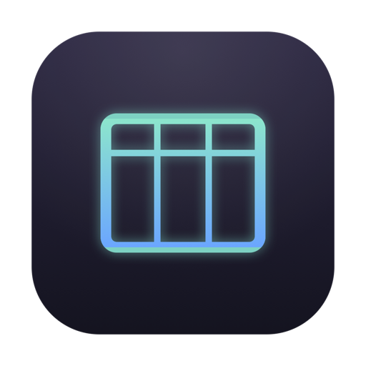

Move through real data without the drag.
Server-side paging, sorting, filters, and a dense native grid keep large tables legible.

TablesView source ↗Tables 0.3.0 · macOS, Linux & Windows beta
Browse tables, write SQL, and review changes in a compact native workspace. Keep each table’s filters and edits close, with optional assistant and read-only MCP support.
| id | customer | status | total |
|---|---|---|---|
| 48291 | Amara Okafor | processing | 184.20 |
| 48288 | Marc Vidal | review | 942.00 |
| 48279 | Yuna Park | processing | 218.45 |
| 48264 | Nora Singh | shipped | 128.10 |
| 48251 | Leo Anders | review | 516.80 |
Unified table tabs
Postgres · MySQL · SQLite
Zero telemetry
Read-only MCP
Built for the loop
Server-side paging, sorting, filters, and a dense native grid keep large tables legible.
Run multiple statements, revisit history, save favorites, and turn results into quick charts.
Stage cell edits and deletes, inspect the generated statements, then commit the batch.
Keep several tables open, each with its own page, filters, selection, and staged edits. Switch Data/Structure in the toolbar below. Review pending changes before committing them.
Read the data guide →UPDATEordersstatus = 'shipped'where id = 48288
UPDATEorderstrackingcode = 'TRK-88419'where id = 48288
DELETEorderswhere id = 48107
select date_trunc('month', createdat) as cohort,
count(*) as customers,
round(avg(lifetimevalue), 2) as avgvalue
from customers
where createdat > now() - interval '1 year'
group by 1 order by 1;A focused editor, multi-statement results, history, favorites, and exploratory charts. No browser runtime between your keystroke and the query.
Read the query guide →Tables keeps the workflow consistent while respecting the systems underneath.
Native types, schemas, indexes, foreign keys, and SSL.
One browsing and editing flow across the protocol family.
Open a local file and work instantly.
The optional assistant helps you work with SQL and schema context. The standalone MCP server lets a client inspect saved connections, schemas, and row pages through read-only tools.
No running desktop app required for MCP. No HTTP listener. Explicit limits on requests, rows, and responses.
Set up the MCP server →list_connections list_tables table_schema table_rows
Unified titlebar tabs. Light and dark appearance. Direct toolbar actions. Bounded queries and assistant streams. Streaming table exports. Atomic metadata writes.
Read the release notes →How updates work →Fast enough for the daily loop. Transparent enough for the important changes.